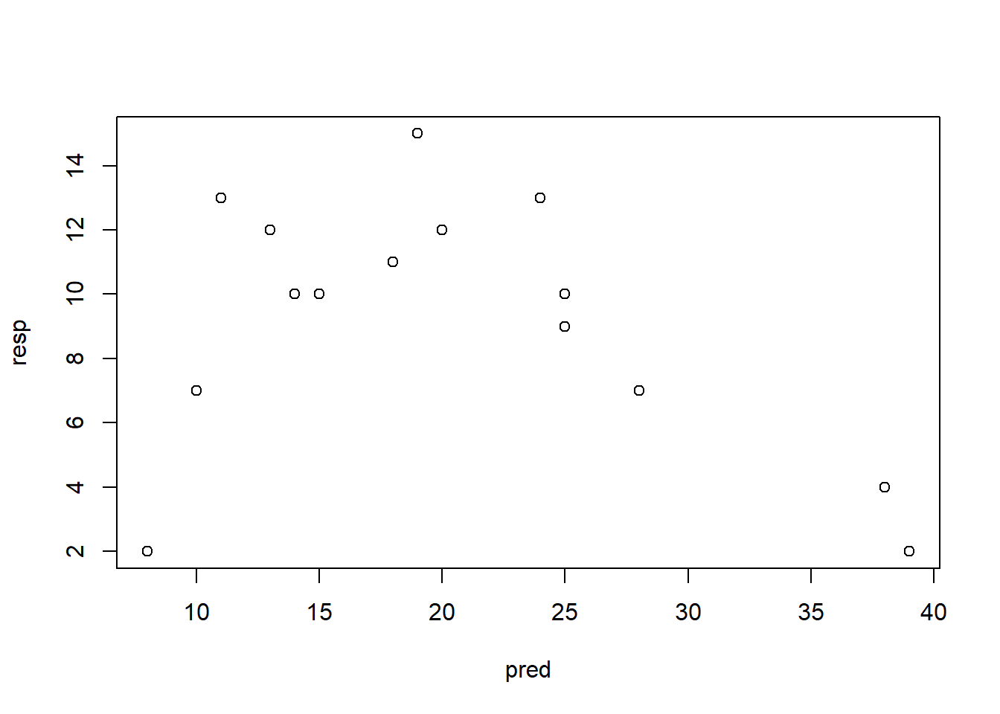
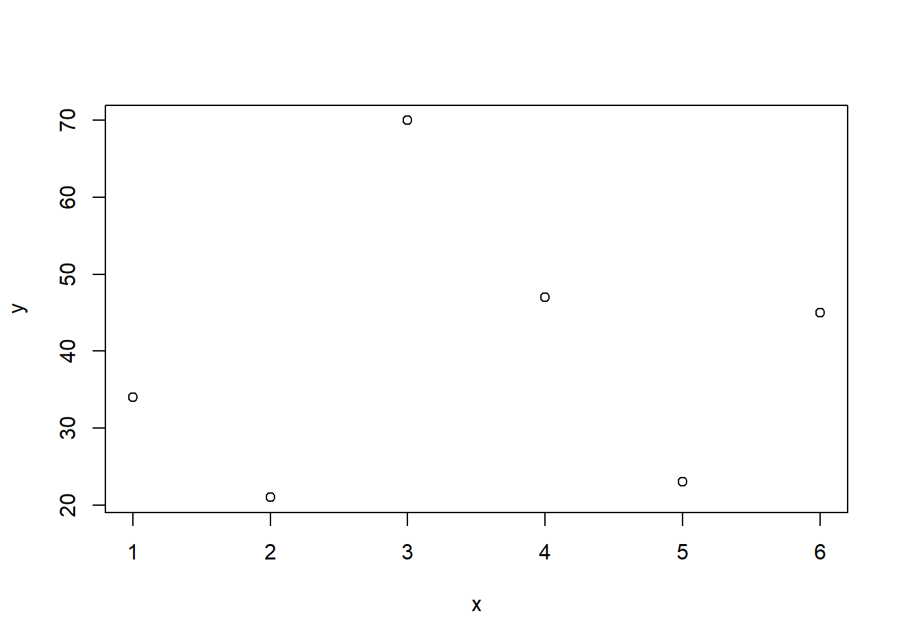
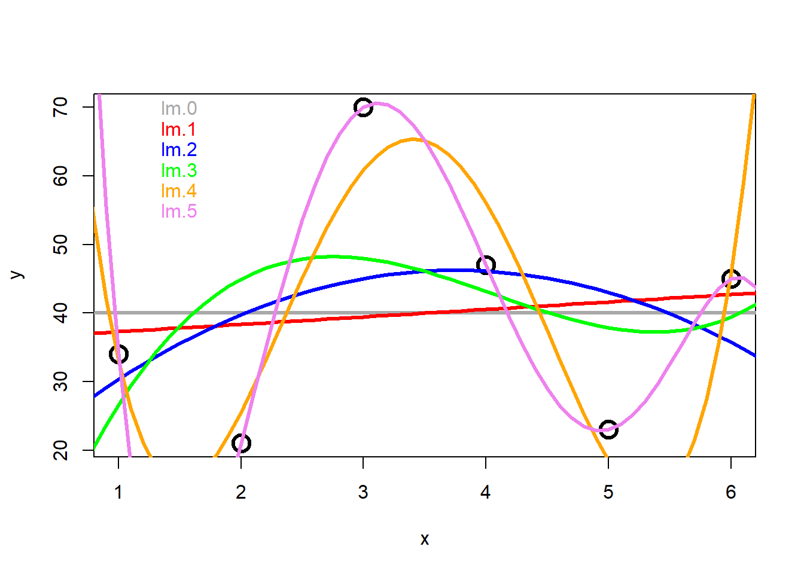
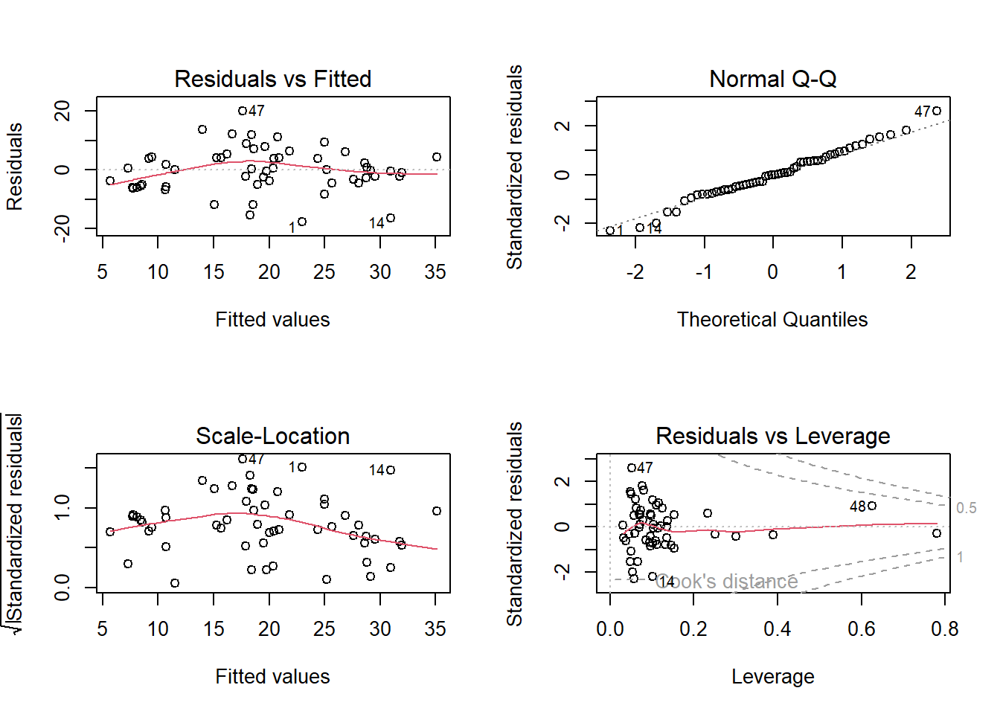

# Daten einlesen und anschauen
compensation <- read.delim("datasets/stat1-4/ipomopsis.csv", sep = ",", stringsAsFactors = T)
## Error in file(file, "rt"): cannot open the connection
head(compensation)
## Error in eval(expr, envir, enclos): object 'compensation' not found
summary(compensation)
## Error in eval(expr, envir, enclos): object 'compensation' not found
# Pflanzengrösse ("Root") vs. Fruchtproduktion ("Fruit")
plot(Fruit ~ Root, data = compensation)
## Error in eval(m$data, eframe): object 'compensation' not foundStat3: Demo
- Download dieses Demoscript via “</>Code” (oben rechts)
- Datensatz ipomopsis.csv
- Datensatz loyn.csv
ANCOVA
Experiment zur Fruchtproduktion (“Fruit”) von Ipomopsis sp. (“Fruit”) in Abhängigkeit von der Beweidung (“Grazing” mit 2 Levels: “Grazed”, “Ungrazed”) und korrigiert für die Pflanzengrösse vor der Beweidung (hier ausgedrückt als Durchmesser an der Spitze des Wurzelstock: “Root”)
-> Je grösser die Pflanze, desto grösser ihre Fruchtproduktion.
# Beweidung ("Grazing") vs. Fruchtroduktion ("Fruit)
boxplot(Fruit ~ Grazing, data = compensation)
## Error in eval(m$data, parent.frame()): object 'compensation' not found-> In der beweideten Gruppe scheint die Fruchtproduktion grösser. Liegt dies an der Beweidung oder an unterschiedlichen Pflanzengrössen zwischen den Gruppen?
# Plotten der vollständigen Daten/Information
library("ggplot2")
ggplot(compensation, aes(Root, Fruit, color = Grazing)) +
geom_point() +
theme_classic()
## Error in eval(expr, envir, enclos): object 'compensation' not found-> Die grössere Fruchtproduktion innerhalb der beweideten Gruppe scheint also ein Resultat von unterschiedlichen Pflanzengrössen zwischen den Gruppen zu sein und nicht an der Beweidung zu liegen.
# Lineare Modelle definieren und anschauen
aoc.1 <- lm(Fruit ~ Root * Grazing, data = compensation) # Volles Modell mit Interaktion
## Error in eval(mf, parent.frame()): object 'compensation' not found
summary.aov(aoc.1)
## Error in eval(expr, envir, enclos): object 'aoc.1' not found
aoc.2 <- lm(Fruit ~ Grazing + Root, data = compensation) # Finales Modell ohne die (nicht signifikante Interaktion)
## Error in eval(mf, parent.frame()): object 'compensation' not found
summary.aov(aoc.2) # ANOVA-Tabelle
## Error in eval(expr, envir, enclos): object 'aoc.2' not found
summary(aoc.2) # Parameter-Tabelle
## Error in eval(expr, envir, enclos): object 'aoc.2' not found
# Residualplots anschauen
par(mfrow = c(2, 2))
plot(aoc.2)
## Error in eval(expr, envir, enclos): object 'aoc.2' not found-> Das ANCOVA-Modell widerspiegelt die Zusammenhänge wie sie aufgrund der grafisch dargestellten Daten zu vermuten sind gut. Die Residual-Plots zeigen 3 Ausreisser (Beobachtungen 27, 34 und 37), welche “aus der Reihe tanzen”.
Polynomische Regression
# Daten generieren und Modelle rechnen
pred <- c(20, 19, 25, 10, 8, 15, 13, 18, 11, 14, 25, 39, 38, 28, 24) # "pred" sei unsere unabhängige Variable
resp <- c(12, 15, 10, 7, 2, 10, 12, 11, 13, 10, 9, 2, 4, 7, 13) # "resp" sei unsere abhängige Variable
plot(pred, resp) # So sehen die Daten aus
# Modelle definieren
lm.1 <- lm(resp ~ pred) # Einfaches lineares Modell
lm.quad <- lm(resp ~ pred + I(pred^2)) # lineares Modell mit quadratischem Term
summary(lm.1) # Modell anschauen
##
## Call:
## lm(formula = resp ~ pred)
##
## Residuals:
## Min 1Q Median 3Q Max
## -9.0549 -1.7015 0.5654 2.0617 5.6406
##
## Coefficients:
## Estimate Std. Error t value Pr(>|t|)
## (Intercept) 12.2879 2.4472 5.021 0.000234 ***
## pred -0.1541 0.1092 -1.412 0.181538
## ---
## Signif. codes: 0 '***' 0.001 '**' 0.01 '*' 0.05 '.' 0.1 ' ' 1
##
## Residual standard error: 3.863 on 13 degrees of freedom
## Multiple R-squared: 0.1329, Adjusted R-squared: 0.06622
## F-statistic: 1.993 on 1 and 13 DF, p-value: 0.1815-> kein signifikanter Zusammenhang und entsprechend kleines Bestimmtheitsmass (adj. R2 = 0.07)
summary(lm.quad) # Modell anschauen
##
## Call:
## lm(formula = resp ~ pred + I(pred^2))
##
## Residuals:
## Min 1Q Median 3Q Max
## -4.3866 -1.1018 -0.2027 1.3831 4.4211
##
## Coefficients:
## Estimate Std. Error t value Pr(>|t|)
## (Intercept) -2.239308 3.811746 -0.587 0.56777
## pred 1.330933 0.360105 3.696 0.00306 **
## I(pred^2) -0.031587 0.007504 -4.209 0.00121 **
## ---
## Signif. codes: 0 '***' 0.001 '**' 0.01 '*' 0.05 '.' 0.1 ' ' 1
##
## Residual standard error: 2.555 on 12 degrees of freedom
## Multiple R-squared: 0.6499, Adjusted R-squared: 0.5915
## F-statistic: 11.14 on 2 and 12 DF, p-value: 0.001842-> signifikanter Zusammenhang und viel besseres Bestimmtheitsmass (adj. R2 = 0.60)
# Modelle plotten
par(mfrow = c(1, 2))
# 1. lineares Modell
plot(resp ~ pred, main = "Lineares Modell")
abline(lm.1, col = "blue")
# 2. quadratisches Modell
plot(resp ~ pred, main = "Quadratisches Modell")
xv <- seq(0, 40, 0.1) # Input für Modellvoraussage via predict ()
yv2 <- predict(lm.quad, list(pred = xv))
lines(xv, yv2, col = "red")
# Residualplots
par(mfrow = c(2, 2))
plot(lm.1, main = "Lineares Modell")
plot(lm.quad, main = "Quadratisches Modell")
Simulation Overfitting
# Beispieldaten mit 6 Datenpunkten
test <- data.frame("x" = c(1, 2, 3, 4, 5, 6), "y" = c(34, 21, 70, 47, 23, 45))
par(mfrow = c(1, 1))
plot(y ~ x, data = test)
# Zunehmend komplizierte Modelle (je komplizierter desto overfitteter) definieren
lm.0 <- lm(y ~ 1, data = test)
lm.1 <- lm(y ~ x, data = test)
lm.2 <- lm(y ~ x + I(x^2), data = test)
lm.3 <- lm(y ~ x + I(x^2) + I(x^3), data = test)
lm.4 <- lm(y ~ x + I(x^2) + I(x^3) + I(x^4), data = test)
lm.5 <- lm(y ~ x + I(x^2) + I(x^3) + I(x^4) + I(x^5), data = test)
# Summaries rechnen
smy.0 <- summary(lm.0)
smy.1 <- summary(lm.1)
smy.2 <- summary(lm.2)
smy.3 <- summary(lm.3)
smy.4 <- summary(lm.4)
smy.5 <- summary(lm.5)
# R2 vergleichen
smy.0$r.squared
## [1] 0
smy.1$r.squared
## [1] 0.01242685
smy.2$r.squared
## [1] 0.1105981
smy.3$r.squared
## [1] 0.1697982
smy.4$r.squared
## [1] 0.874639
smy.5$r.squared
## [1] 1
smy.5$adj.r.squared
## [1] NaN-> R2 wird immer grösser, d.h. die Modelle werden immer besser. ;-)
# Modelle plotten
xv <- seq(from = 0, to = 10, by = 0.1)
plot(y ~ x, cex = 2, col = "black", lwd = 3, data = test)
yv <- predict(lm.1, list(x = xv))
lines(xv, yv, col = "red", lwd = 3)
text(x = c(1, 70), "lm.1", col = "red")
yv <- predict(lm.2, list(x = xv))
lines(xv, yv, col = "blue", lwd = 3)
text(x = c(1, 65), "lm.2", col = "blue")
yv <- predict(lm.3, list(x = xv))
lines(xv, yv, col = "green", lwd = 3)
text(x = c(1, 60), "lm.3", col = "green")
yv <- predict(lm.4, list(x = xv))
lines(xv, yv, col = "orange", lwd = 3)
text(x = c(1, 55), "lm.4", col = "orange")
yv <- predict(lm.5, list(x = xv))
lines(xv, yv, col = "violet", lwd = 3)
text(x = c(1, 50), "lm.5", col = "violet")
-> Auch der optische Fit wird immer besser. Wir bestreiben jedoch Overfitting und Overfittig ist nicht gut: Denn, macht es Sinn, 6 Datenpunkte mit einem Modell mit 6 Parametern zu fitten??
Multiple lineare Regression (basierend auf Logan, Beispiel 9A)
# Daten laden und anschauen
loyn <- read.delim("datasets/stat1-4/loyn.csv", sep = ",")
## Error in file(file, "rt"): cannot open the connection
summary(loyn)
## Error in eval(expr, envir, enclos): object 'loyn' not foundKorrelation zwischen den Prädiktoren
# Wir setzen die Schwelle bei |0.7|
cor <- cor(loyn[, 3:8]) # Korrelationen rechnen details siehe: "?cor"
## Error in eval(expr, envir, enclos): object 'loyn' not found
# Korrelationen Visualisieren (google: "correlation plot r"...)
library("corrplot")
## Error in library("corrplot"): there is no package called 'corrplot'
corrplot.mixed(cor, lower = "ellipse", upper = "number", order = "AOE")
## Error in corrplot.mixed(cor, lower = "ellipse", upper = "number", order = "AOE"): could not find function "corrplot.mixed"-> Keine Korrelation ist >|0.7| . Aber es gilt zu beachten , dass GRAZE ziemlich stark |>0.6| mit YR.ISOL korreliert ist
# Volles Modell definieren
names(loyn)
## Error in eval(expr, envir, enclos): object 'loyn' not found
lm.1 <- lm(ABUND ~ YR.ISOL + AREA + DIST + LDIST + GRAZE + ALT, data = loyn)
## Error in eval(mf, parent.frame()): object 'loyn' not found
library("car")
## Error in library("car"): there is no package called 'car'
par(mfrow = c(2, 2))
plot(lm.1)
-> Plot sieht zwar ok aus, aber mit 6 Prädiktoren ist das Modell wohl “overfitted”
vif(lm.1)
## Error in vif(lm.1): could not find function "vif"Modellvereinfachung
Schrittweise die am wenigsten signifkanten Terme entfernen:
lm.1 <- lm(ABUND ~ YR.ISOL + AREA + DIST + LDIST + GRAZE + ALT, data = loyn)
## Error in eval(mf, parent.frame()): object 'loyn' not found
summary(lm.1)
##
## Call:
## lm(formula = y ~ x, data = test)
##
## Residuals:
## 1 2 3 4 5 6
## -3.286 -17.371 30.543 6.457 -18.629 2.286
##
## Coefficients:
## Estimate Std. Error t value Pr(>|t|)
## (Intercept) 36.200 18.847 1.921 0.127
## x 1.086 4.839 0.224 0.833
##
## Residual standard error: 20.24 on 4 degrees of freedom
## Multiple R-squared: 0.01243, Adjusted R-squared: -0.2345
## F-statistic: 0.05033 on 1 and 4 DF, p-value: 0.8335
lm.2 <- update(lm.1, ~ . - AREA) # Prädiktor mit grösstem p-Wert entfernen
anova(lm.1, lm.2) # Modelle vergleichen (falls signifikant, so müssten man den Prädiktor wieder ins Modell nehmen)
## Analysis of Variance Table
##
## Model 1: y ~ x
## Model 2: y ~ x
## Res.Df RSS Df Sum of Sq F Pr(>F)
## 1 4 1639.4
## 2 4 1639.4 0 0
summary(lm.2) # Neues einfacheres Modell anschauen und Prädiktor mit grösstem p-Wert ausfindig machen
##
## Call:
## lm(formula = y ~ x, data = test)
##
## Residuals:
## 1 2 3 4 5 6
## -3.286 -17.371 30.543 6.457 -18.629 2.286
##
## Coefficients:
## Estimate Std. Error t value Pr(>|t|)
## (Intercept) 36.200 18.847 1.921 0.127
## x 1.086 4.839 0.224 0.833
##
## Residual standard error: 20.24 on 4 degrees of freedom
## Multiple R-squared: 0.01243, Adjusted R-squared: -0.2345
## F-statistic: 0.05033 on 1 and 4 DF, p-value: 0.8335
# Oben beschriebene Schritte wiederholen bis nur noch signifikante Prädiktoren im Modell
lm.3 <- update(lm.2, ~ . - DIST)
anova(lm.2, lm.3)
## Analysis of Variance Table
##
## Model 1: y ~ x
## Model 2: y ~ x
## Res.Df RSS Df Sum of Sq F Pr(>F)
## 1 4 1639.4
## 2 4 1639.4 0 0
summary(lm.3)
##
## Call:
## lm(formula = y ~ x, data = test)
##
## Residuals:
## 1 2 3 4 5 6
## -3.286 -17.371 30.543 6.457 -18.629 2.286
##
## Coefficients:
## Estimate Std. Error t value Pr(>|t|)
## (Intercept) 36.200 18.847 1.921 0.127
## x 1.086 4.839 0.224 0.833
##
## Residual standard error: 20.24 on 4 degrees of freedom
## Multiple R-squared: 0.01243, Adjusted R-squared: -0.2345
## F-statistic: 0.05033 on 1 and 4 DF, p-value: 0.8335
lm.4 <- update(lm.3, ~ . - YR.ISOL)
anova(lm.3, lm.4)
## Analysis of Variance Table
##
## Model 1: y ~ x
## Model 2: y ~ x
## Res.Df RSS Df Sum of Sq F Pr(>F)
## 1 4 1639.4
## 2 4 1639.4 0 0
summary(lm.4)
##
## Call:
## lm(formula = y ~ x, data = test)
##
## Residuals:
## 1 2 3 4 5 6
## -3.286 -17.371 30.543 6.457 -18.629 2.286
##
## Coefficients:
## Estimate Std. Error t value Pr(>|t|)
## (Intercept) 36.200 18.847 1.921 0.127
## x 1.086 4.839 0.224 0.833
##
## Residual standard error: 20.24 on 4 degrees of freedom
## Multiple R-squared: 0.01243, Adjusted R-squared: -0.2345
## F-statistic: 0.05033 on 1 and 4 DF, p-value: 0.8335
lm.5 <- update(lm.4, ~ . - LDIST)
anova(lm.4, lm.5)
## Analysis of Variance Table
##
## Model 1: y ~ x
## Model 2: y ~ x
## Res.Df RSS Df Sum of Sq F Pr(>F)
## 1 4 1639.4
## 2 4 1639.4 0 0
summary(lm.5)
##
## Call:
## lm(formula = y ~ x, data = test)
##
## Residuals:
## 1 2 3 4 5 6
## -3.286 -17.371 30.543 6.457 -18.629 2.286
##
## Coefficients:
## Estimate Std. Error t value Pr(>|t|)
## (Intercept) 36.200 18.847 1.921 0.127
## x 1.086 4.839 0.224 0.833
##
## Residual standard error: 20.24 on 4 degrees of freedom
## Multiple R-squared: 0.01243, Adjusted R-squared: -0.2345
## F-statistic: 0.05033 on 1 and 4 DF, p-value: 0.8335
lm.6 <- update(lm.5, ~ . - ALT)
anova(lm.5, lm.6)
## Analysis of Variance Table
##
## Model 1: y ~ x
## Model 2: y ~ x
## Res.Df RSS Df Sum of Sq F Pr(>F)
## 1 4 1639.4
## 2 4 1639.4 0 0
summary(lm.6)
##
## Call:
## lm(formula = y ~ x, data = test)
##
## Residuals:
## 1 2 3 4 5 6
## -3.286 -17.371 30.543 6.457 -18.629 2.286
##
## Coefficients:
## Estimate Std. Error t value Pr(>|t|)
## (Intercept) 36.200 18.847 1.921 0.127
## x 1.086 4.839 0.224 0.833
##
## Residual standard error: 20.24 on 4 degrees of freedom
## Multiple R-squared: 0.01243, Adjusted R-squared: -0.2345
## F-statistic: 0.05033 on 1 and 4 DF, p-value: 0.8335
par(mfrow = c(2, 2))
plot(lm.6)
-> das minimal adäquate Modell enthält nur noch einen Prädiktor (GRAZE) und dessen Residualplots sehen ok aus.
Hierarchical partitioning
Wir können auch schauen wie bedeutsam die einzelnen Variablen sind:
library("hier.part")
## Error in library("hier.part"): there is no package called 'hier.part'
loyn.preds <- with(loyn, data.frame(YR.ISOL, AREA, DIST, LDIST, GRAZE, ALT))
## Error in eval(expr, envir, enclos): object 'loyn' not found
par(mfrow = c(1, 1))
hier.part(loyn$ABUND, loyn.preds, gof = "Rsqu")
## Error in hier.part(loyn$ABUND, loyn.preds, gof = "Rsqu"): could not find function "hier.part"-> auch hier sticht GRAZE heraus. (und an zweiter Stelle YR.ISOL, der mit GRAZE am stärksten korreliert ist)
Partial regressions
avPlots(lm.1, ask = F)
## Error in avPlots(lm.1, ask = F): could not find function "avPlots"Multimodel inference
library("MuMIn")
## Error in library("MuMIn"): there is no package called 'MuMIn'
global.model <- lm(ABUND ~ YR.ISOL + AREA + DIST + LDIST + GRAZE + ALT, data = loyn)
## Error in eval(mf, parent.frame()): object 'loyn' not found
options(na.action = "na.fail")
allmodels <- dredge(global.model)
## Error in dredge(global.model): could not find function "dredge"
allmodels
## Error in eval(expr, envir, enclos): object 'allmodels' not found
# Variable importance
sw(allmodels)
## Error in sw(allmodels): could not find function "sw"-> Auch mit dieser Sichtweise ist GRAZE der wichtigste Prädiktor
avgmodel <- model.avg(allmodels, subset = TRUE)
## Error in model.avg(allmodels, subset = TRUE): could not find function "model.avg"
summary(avgmodel)
## Error in eval(expr, envir, enclos): object 'avgmodel' not found